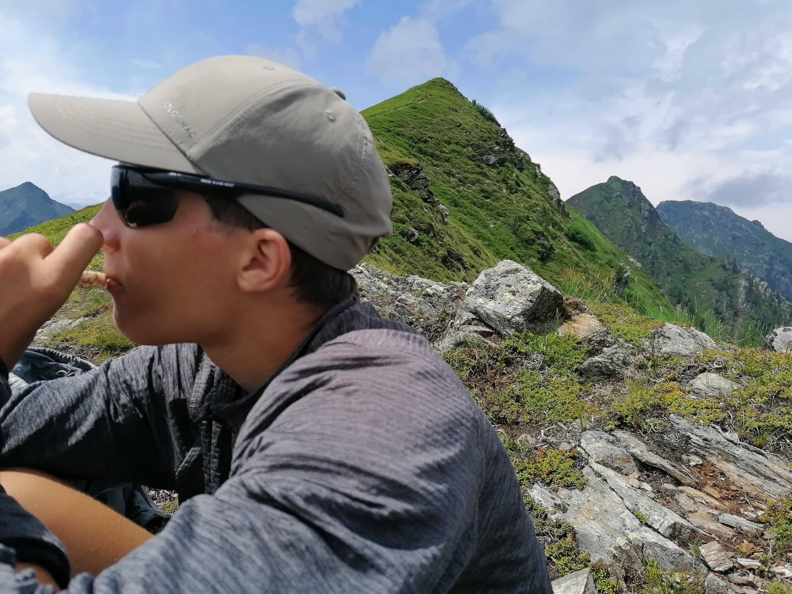

Welcome to my website! I'm Zsombor Peteri, a longform content creator. I specialize in creating immersive video content that tells a story and captures the essence of the places I visit. Check out some of my work below:
Austrian Alps
This was one of my best advenures. We did a lots of roadtrips to got those footages. I hoped i would last forever!
I use DJI and GoPro for filming. Click on the picture for more informatoin.
Long plane flights or car journeys can be boaring. Here are some films and music playlists for long rides.